AWS
Registro en AWS
Para registrarse, debes dirigirte al siguiente enlace.
En él, debes proporcionar una dirección de correo electrónico y un nombre de usuario, como se muestra en la siguiente imagen:
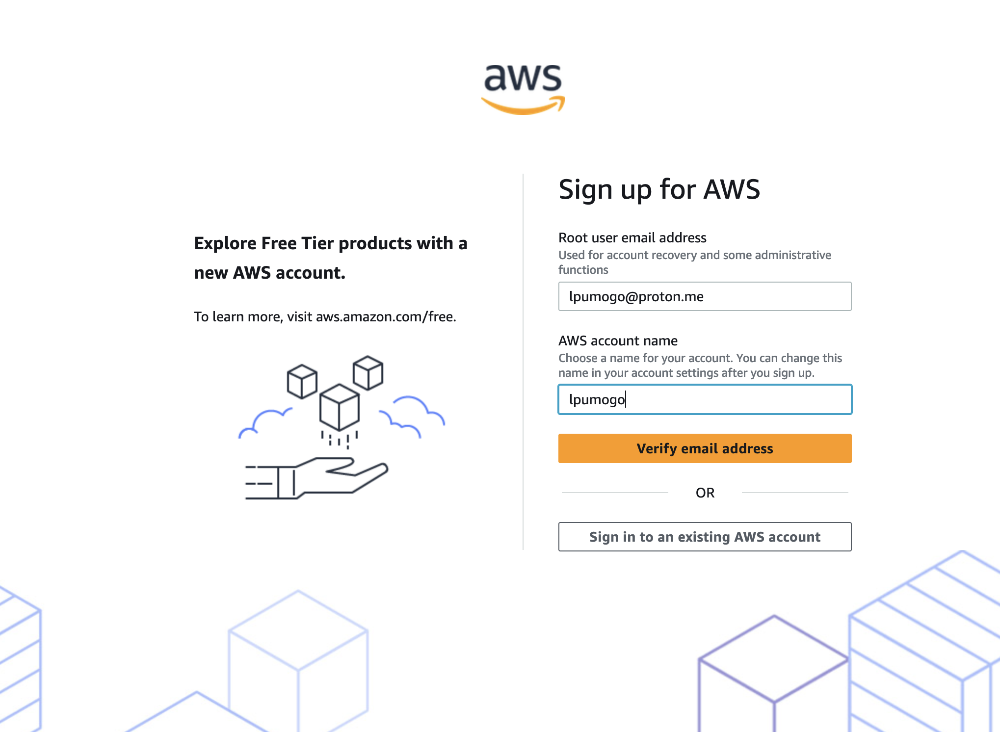
Una vez hayas llenado la información solicitada, haz clic en el botón "Verify Email Address". Luego, accede a tu cuenta de correo electrónico, donde deberías encontrar un mensaje en tu bandeja de entrada con el asunto "AWS Email Verification". Dentro de este mensaje, encontrarás un código de 6 dígitos que será válido por 10 minutos. Introduce este código en el sitio web de AWS.
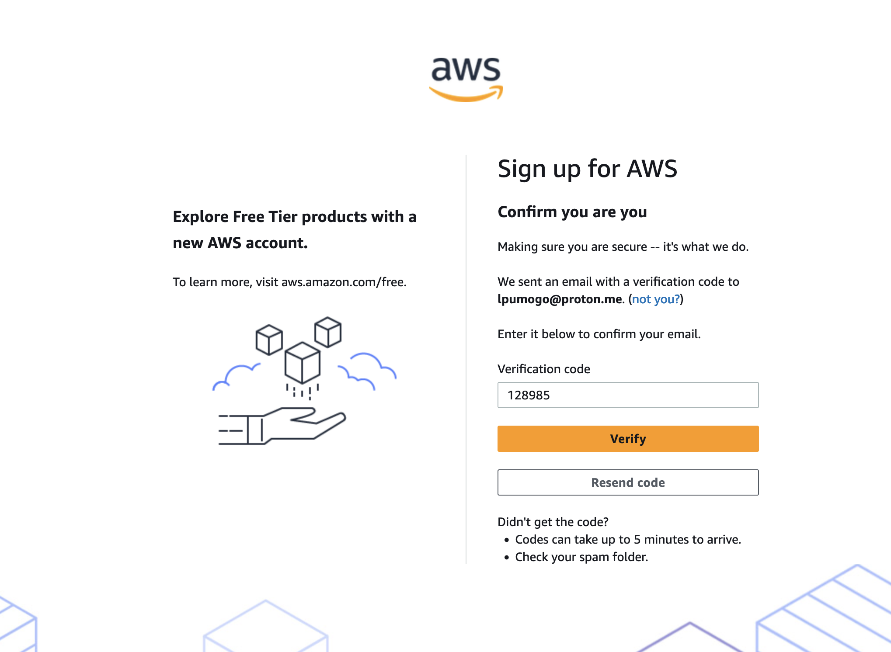
Una vez que la plataforma haya confirmado tu cuenta de correo electrónico, te guiará a través de un proceso de registro en 5 pasos:
- Crea una contraseña.
- Proporciona tu información de contacto.
- Información de pago.
- Código de confirmación SMS.
- Selecciona el tipo de plan de soporte técnico. Seleccionaremos "Basic Support" porque es gratuito.
Después de proporcionar la información solicitada, habrás creado tu cuenta de AWS y verás la siguiente pantalla:
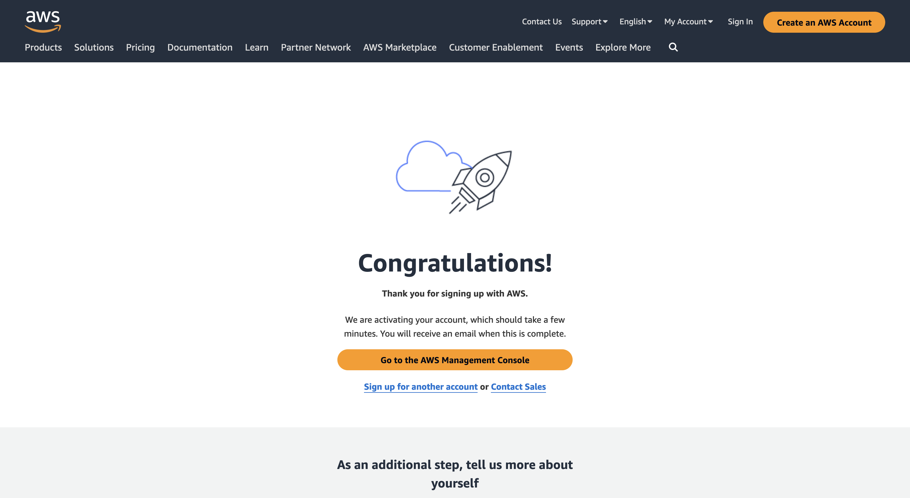
Para ingresar, puedes hacer clic en el botón "Go to the AWS Management Console" o seguir este enlace.
Ingreso y configuración del servicio
La página de ingreso de AWS se ve de la siguiente manera:
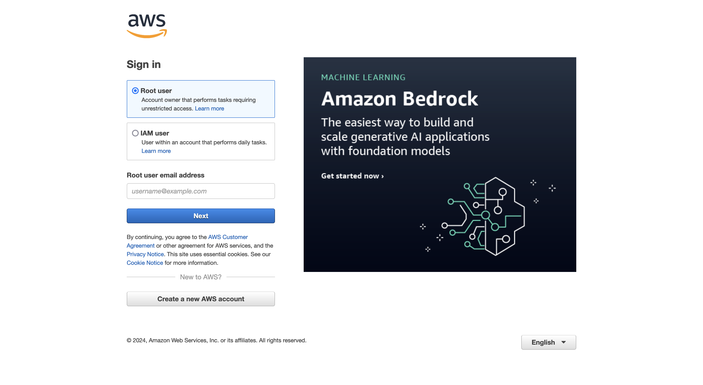
Notarás que puedes ingresar de dos maneras. Por ahora, solo trabajaremos con la opción "Root User". Para ello, ingresa tu correo electrónico y haz clic en "next". En la siguiente ventana, ingresa tu contraseña y haz clic en "Sign in".
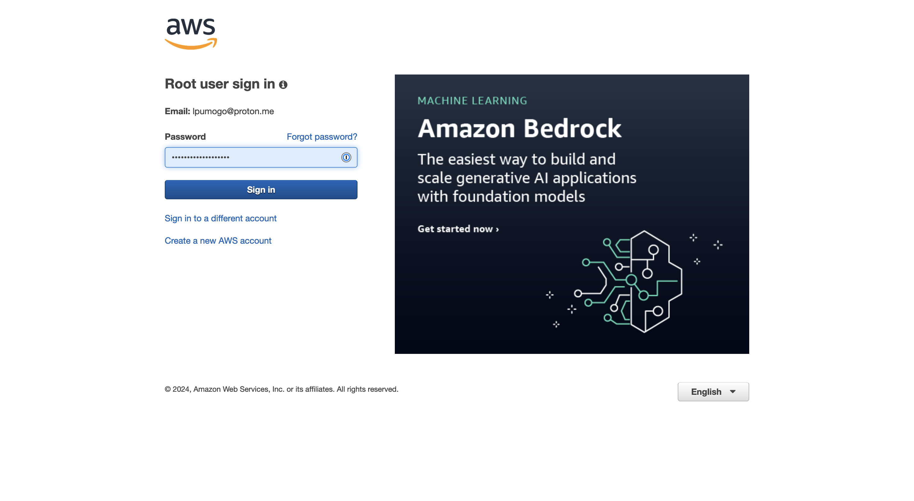
La ventana principal de la plataforma se ve de la siguiente manera:
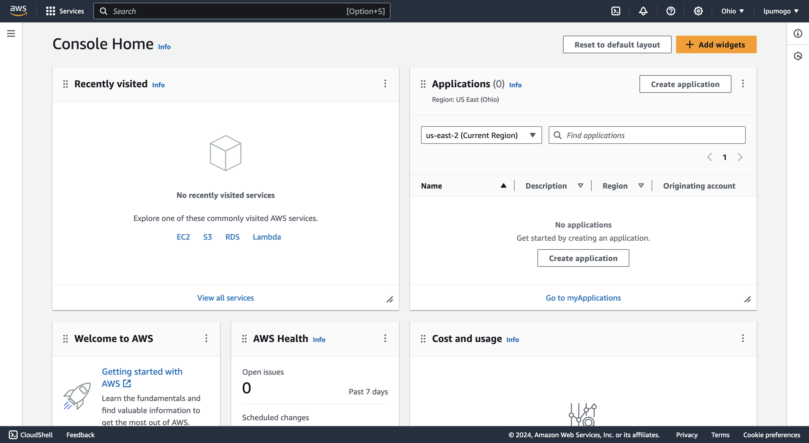
Para desplegar nuestro servidor debemos elegir el servicio correspondiente, para ello da click en el menú "Services" situado en la esquina superior izquierda junto al logo de AWS, ahí se desplegará una lista de categorías, busque la categoría "Compute" y da click en ella, las opciones se actualizarán y elegiremos el servicio "EC2" que es un VPS.
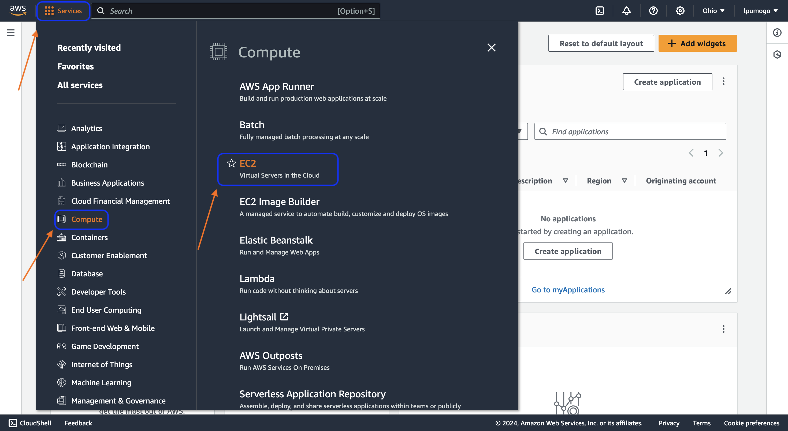
Una vez hemos elegido el servicio a desplegar (EC2) la plataforma nos mostrará un dashboard nuevo con muchas opciones que nos pueden resultar extrañas, lo único que buscamos en ese nuevo panel es un botón naranja que dice "Launch instance".
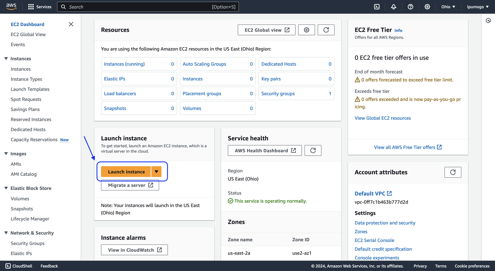
En cuanto demos click en dicho botón cargará una nueva página que nos pemitirá configurar los parámetros de nuestro servidor, las secciones son las siguientes:
- Name and tags
- Application and OS Images (Amazon Machine Image)
- Instance type
- Key pair (login)
- Network settings
- Configure storage
- Advanced details
Name and tags
En este apartado debemos escribir un nombre con el que podamos identificar a este VPS en particular, en mi caso use "Servidor Prueba UPIICSA".
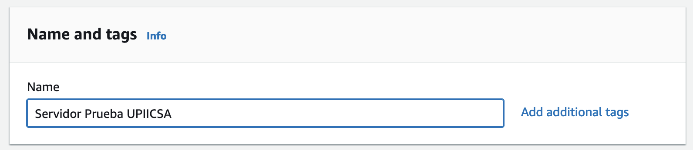
Application and OS Images (Amazon Machine Image)
Es importante el SO
Sistemas Operativos como Windows Server podrían implicar costes de licencias que debes contemplar.
Aquí debemos seleccionar el sistema operativo que será instalado en nuestro servidor, para este taller usaremos "Ubuntu Server LTS", para seleccionarlo basta con dar click en el icono de Ubuntu debajo de la pestaña "Quick Start" y podremos corroborar que sea nuestra imagen deseada en "Amazon Machine Image (AMI)".
Tu selección debería verse muy similar al contenido mostrado en la siguiente imagen:
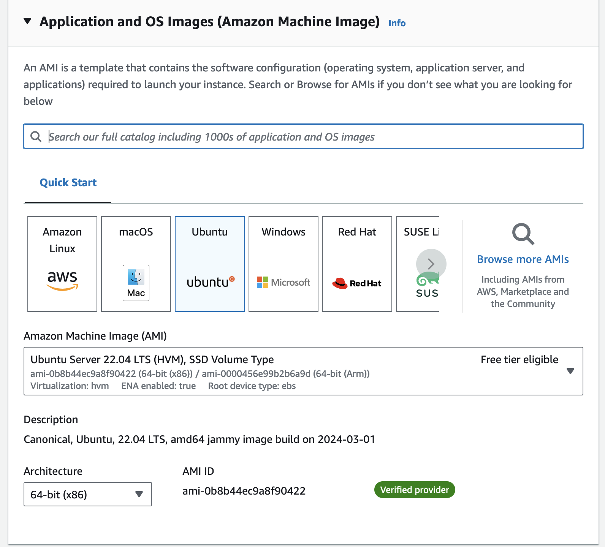
Instance type
En este apartado configuraremos los recursos de hardware con los que contará nuestro VPS, el tipo de máquina que AWS nos da para pruebas gratuitas (Free tier) es el t2.micro, se muy cuidadoso de elegir ese tipo de instancia.
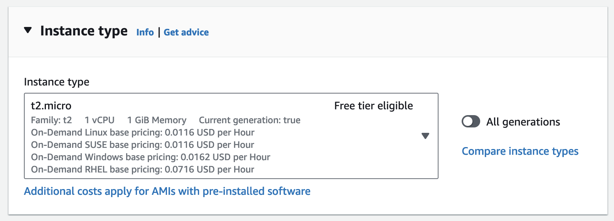
Cuidado con el Instance type
Es importante elegir una instancia que entre en el free tier para no incurrir en cargos no deseados.
AWS especifica que nos regala 750 horas (Aproximadamente un mes) de una instancia t2.micro con su respectiva IPv4, se cuidadoso de monitorear no sobrepasar las 750 horas para evitar cargos, que se harán en automático a tu tarjeta y serán dificiles de cancelar.
Key pair (login)
Da click en la opción "Create new key pair".
Se desplegará una nueva ventana en ella debemos establecer lo siguiente:
- "Key pair name", en mi caso id_rsa_UPIICSA_2NV20, tu la puedes llamar como prefieras pero te sugiero que le pongas el mismo nombre.
- "Key pair type", selecciona "RSA"
- Private key file format, selecciona ".pem"
Cuando valides que tus datos son correctos, da click en "Create key pair".
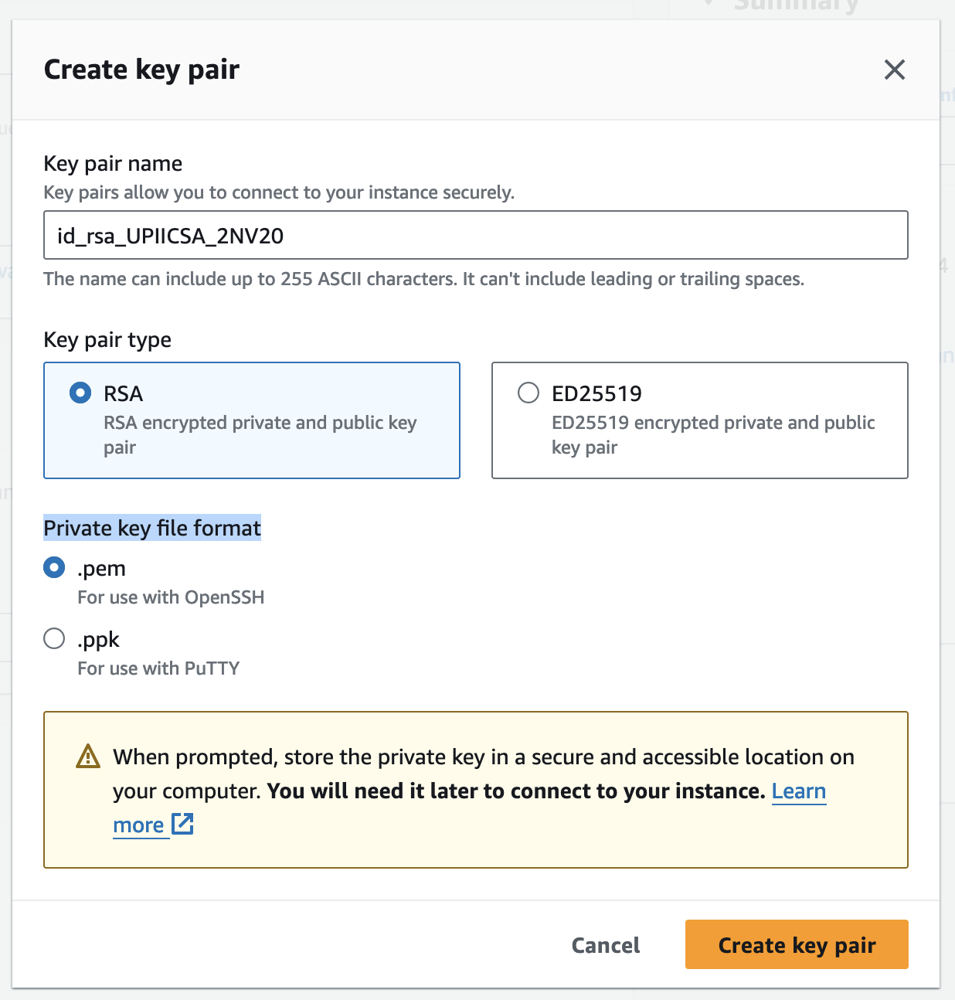
En automático se cerrará la ventana emergente con la que estabas trabajando, se descargará un archivo con el nombre que acabas de escribir y la extensión .pem, además de que se seleccionará en automático la clave que acabas de crear como la clave de conexión a este VPS.
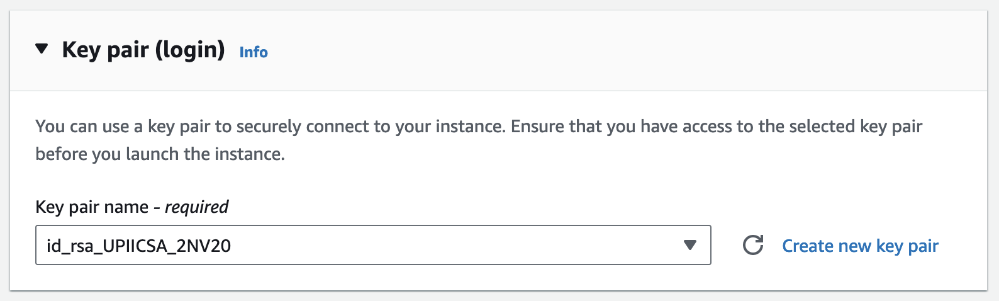
Clave de ingreso
El archivo recien descargado es la clave mediante la cual seremos capaces de ingresar al servidor, es muy importante que NO la borres o pierdas.
Network settings
En esta sección recomendamos confirmar los parámetros que vienen por defecto sin modificar.
Debemos verificar que los siguientes parámetros sí tengan estos valores:
- "Auto-assign public IP" debe estar en "Enable".
- "Firewall (security groups)" debe tener seleccionada la opción "Create security group".
- Tu security group debe permitir el tráfico SSH, para esto seleccionamos la casilla "Allow SSH traffic from" y por defecto tendrá el valor "Anywhere (0.0.0.0/0)".
Permitir tráfico SSH
El último valor dice que permitiremos que se establezca una conexión remota mediante el protocolo SSH, es decir que ejecuten comandos en nuestro servidor mediante una terminal remota, la dirección 0.0.0.0/0 es un comodín equivalente a decir "cualquier IP", entonces cualquier IP puede tener una sesión remota con nuestro servidor, esto incluye tu universidad, tu casa,algún aeropuerto, alguna cafetería, la oficina de un hacker...
Podras notar que la última opción es un poco inquietante, por ello en entornos de producción reales en lugar de emplear un comodín se recomienda poner nuestra IP exacta, en este momento lo puedes dejar de esta manera, pero debes saber que existe el riesgo de ser hackeado.
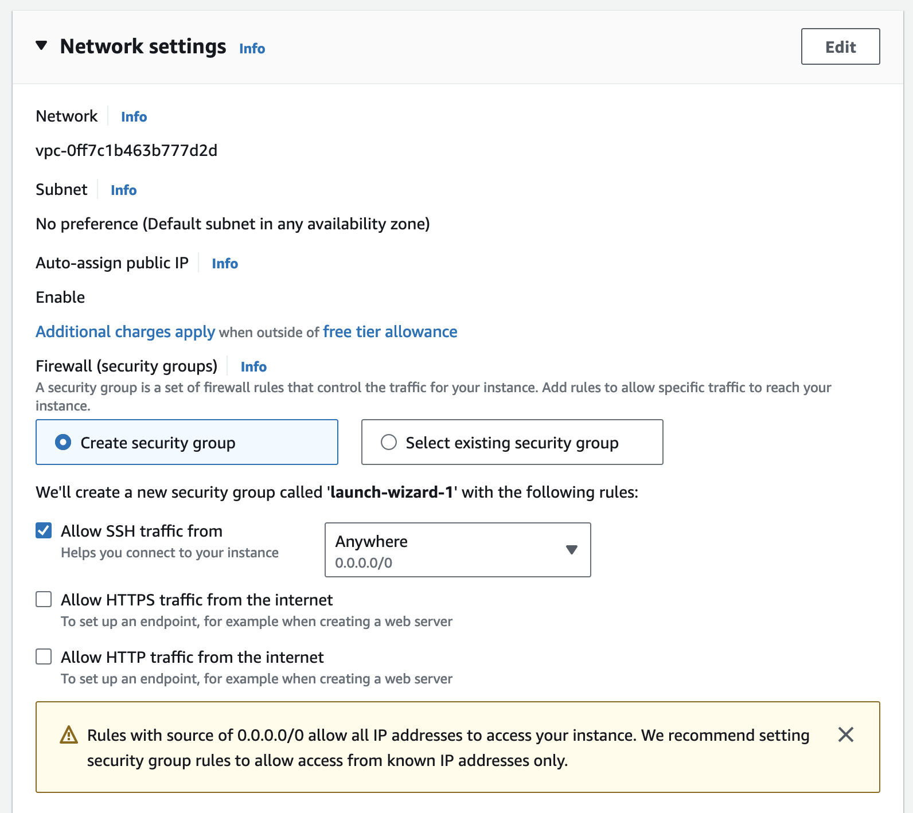
Configure storage
Aquí asegúrate que los parametros sean iguales a los de la imagen adjunta (deberían serlo porque son los parámetros por defecto).
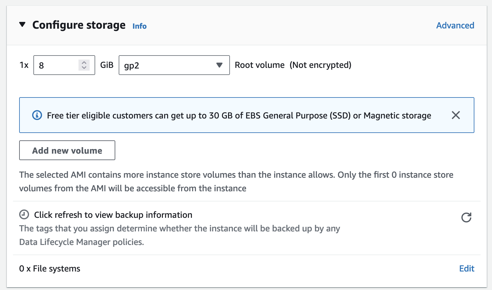
Advanced details
Por el momento no modificaremos nada en esta sección.
Summary
Una vez terminemos de ajustar nuestro VPS, verifiquemos que el recuadro de "Summary" tenga los siguientes datos:
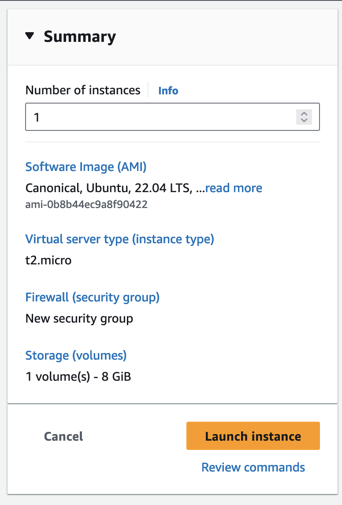
Si todo está correcto, da click en el botón "Launch Instance".
Después de unos segundos deberías ver un mensaje que indique que tu instancia se inició de forma exitosa. 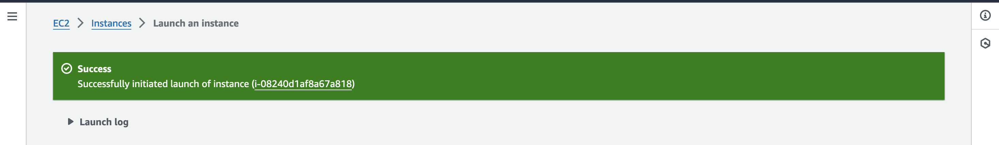
Si has llegado hasta este punto de la guía sin tener problemas, felicidades configuraste tu primer VPS en AWS de forma exitosa, ya está disponible para que trabajes con él.
En el Módulo 2 - Conoce tu servidor aprenderas como conectarte de manera remota para ocuparlo.
Es muy importante que sepas como detener tu servidor porque solo puedes tenerlo prendido 750 horas sin generar cargos, tambien es importante que sepas como eliminarlo para que no te cobren por él una vez termines el taller, a continuación habrá dos secciones que te enseñarán a realizar estas dos acciones.
Detener o Eliminar instancia EC2
Accede a la consola de administración de AWS
Dirigete a la siguiente página (es posible que te pida ingresar tus credenciales), una vez que estés dentro verás una página similar a la siguiente:
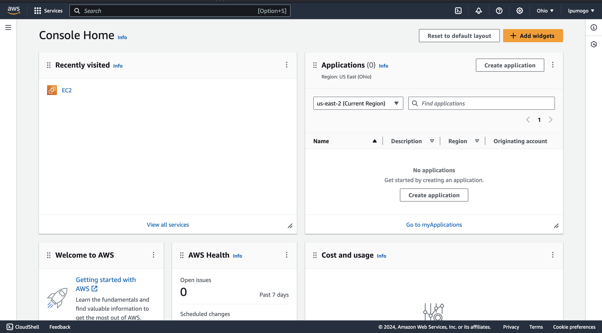
Navega hacia el dashboard EC2
Hay diferentes maneras de llegar desde la consola principal al dashboard del servicio deseado, nosotros primero daremos click en el menú con tres líneas horizontales paralelas situado en la esquina superior izquierda, debajo del logo de AWS, ahí nos desplegará un menú con el título "Console Home".
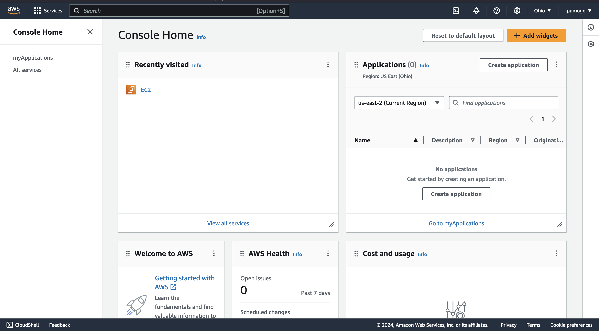
En dicho menú selecciona la opción "All Services", esto cambiará el contenido mostrado en el panel derecho de la aplicación, ahí busca la categoría "Compute" y en ella el servicio "EC2".
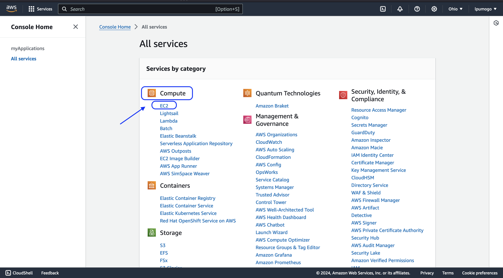
La ventana se actualizará y lo que vemos ahora es el dashboard del servicio EC2.
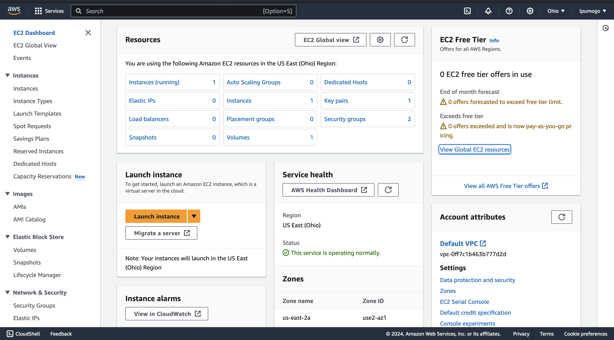
Resumen de recursos
En el panel "Resources" podrá ver un cuadro con la cantidad de recursos que están asociados a su cuenta en cierta zona, si ha seguido esta guía únicamente y no tiene proyectos adicionales debería tener los siguientes recursos listados:
- Instances (Running) 1
- Instances 1
- Key pairs 1
- Security Groups 2
- Volumes 1
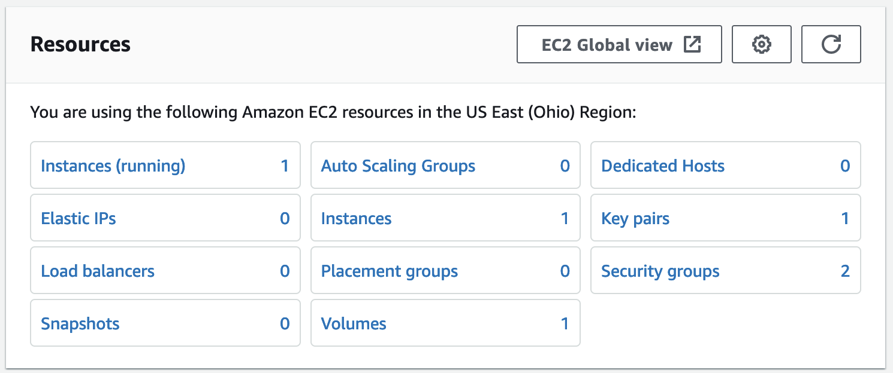
Localice la instancia deseada
Para listar nuestras instancias podemos dar click en la opción "Instances" situada en el menú lateral izquierdo o en la opción "Instances" del panel con el resumen de recursos.
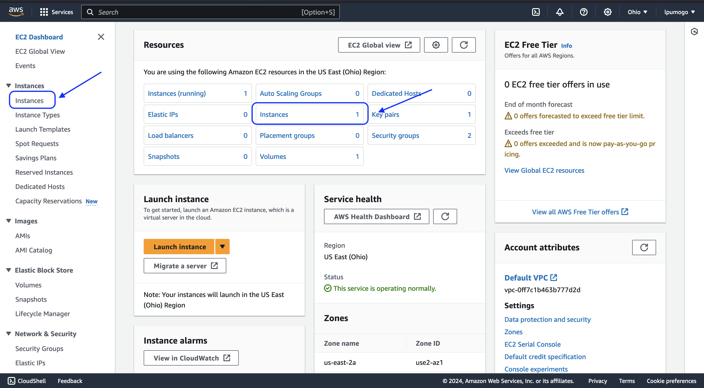
El sitio se actualizará y nos mostrará nuestras instancias.
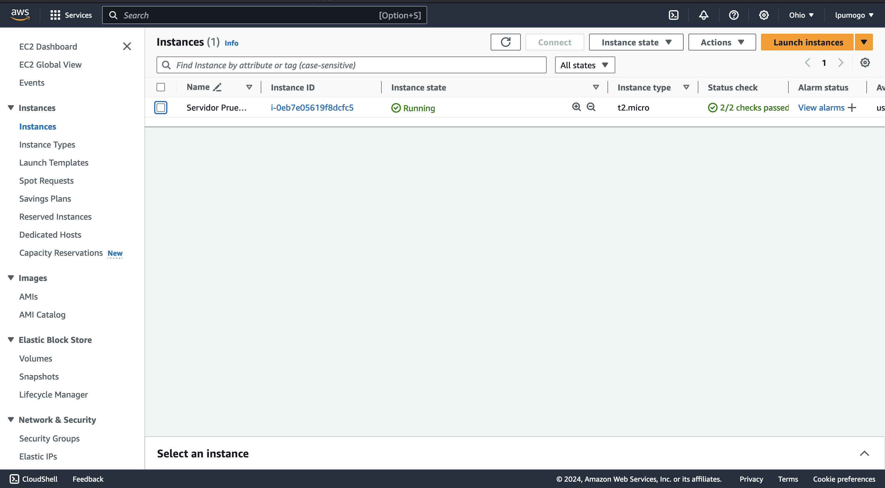
Detener una instancia
asegúrate de seleccionar la instancia correcta
Para operar con una instancia primero asegúrate que sea la correcta, valida que el nombre en la columna "Name" corresponda con el VPS que quieres operar.
Una vez identificada la instancia bastará con dar click derecho en cualquier parte de la fila que representa la instancia, y en el menú que se despliega seleccionar la opción "Stop instance".
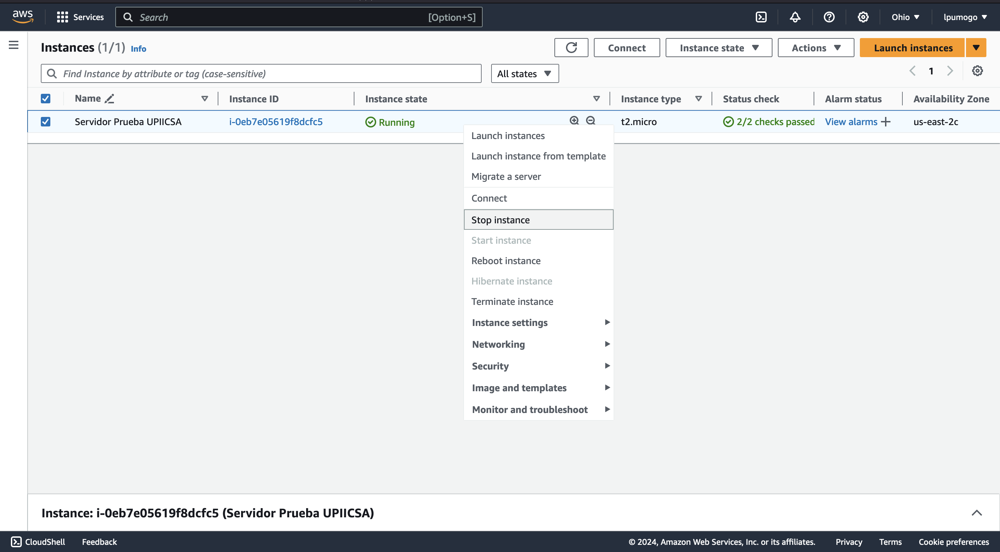
Emergerá una ventana para confirmar nuestra acción, da click en el botón que dice "Stop".
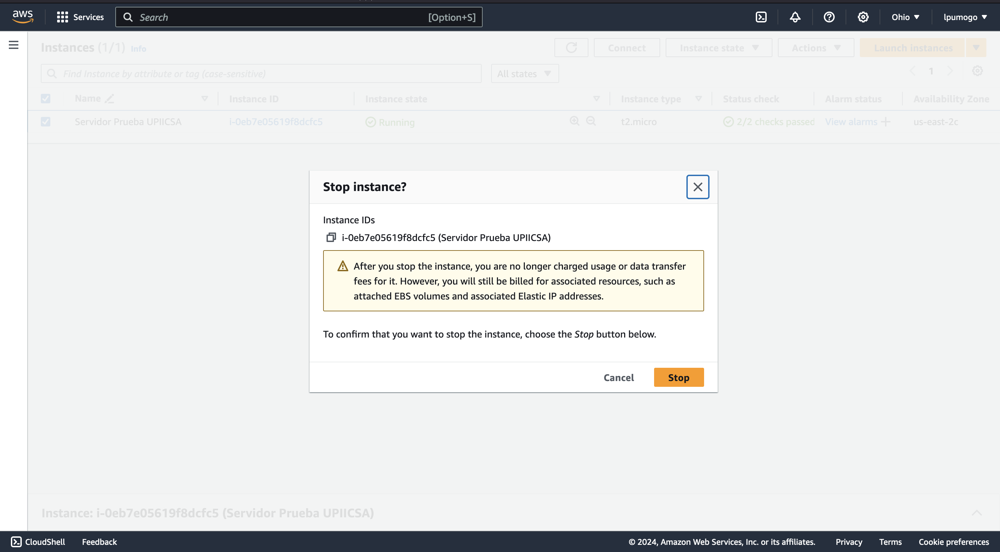
Después de unos segundos deberá ver que la operación se completó exitosamente y que el estado de la instancia cambió a "stopped".
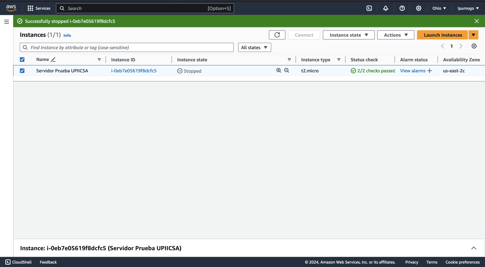
El proceso para volver a activar la instancia es análogo, solo selecciona la opción "Start Instance".
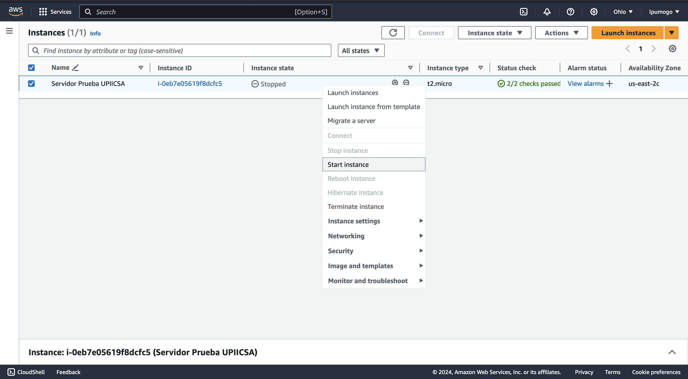
Eliminar una instancia
La irreversibilidad de la acción Terminate
Una vez que hayas terminado una instancia NO hay manera de recuperarla, así que solo realiza este proceso cuando estés seguro de que no ocuparás el VPS en absoluto y no representa ninguna pérdida de información.
Antes de eliminar una instancia asegúrate de haberla detenido, una vez esté detenida deberás dar click derecho en cualquier parte de la fila que representa la instancia, y en el menú que se despliega seleccionar la opción "Terminate instance".
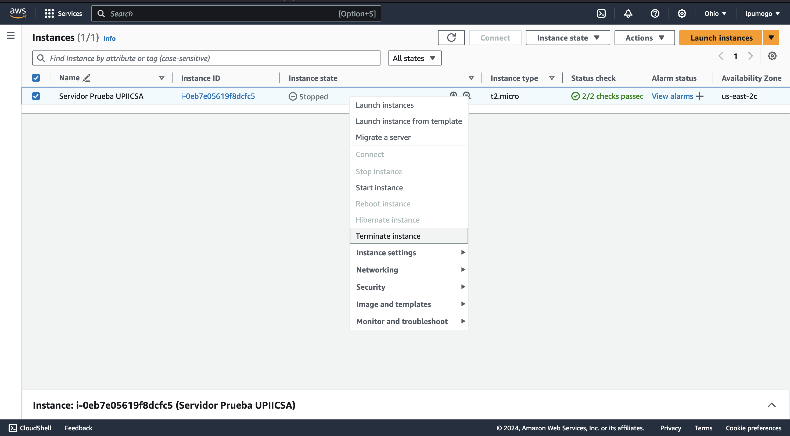
Emergerá una ventana para confirmar nuestra acción, da click en el botón que dice "Terminate".
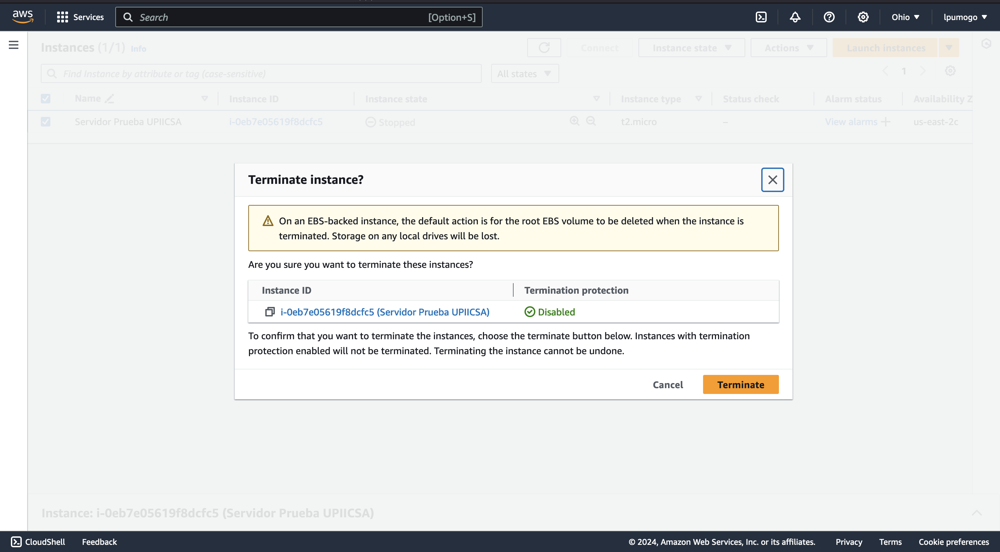
Al poco tiempo el estado de nuestra instancia cambiará a "Terminated" y después de unas horas ya no la veremos en nuestro listado de instancias.
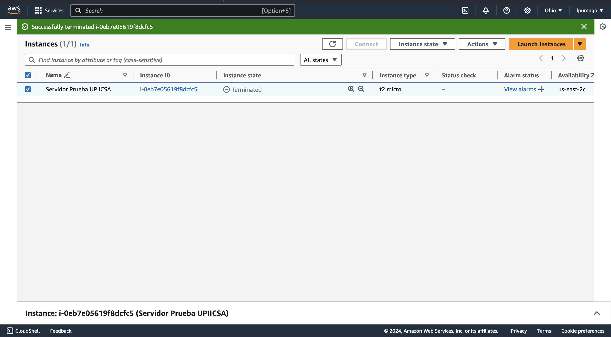
Si vuelve a dirigirse al dashboard de EC2 verá que los recursos diminuyeron en uno, excepto por la cantidad de instancias, esto es porque aún no se ve reflejado totalmente el cambio, pero después de una horas tambien se descontará esa instancia.
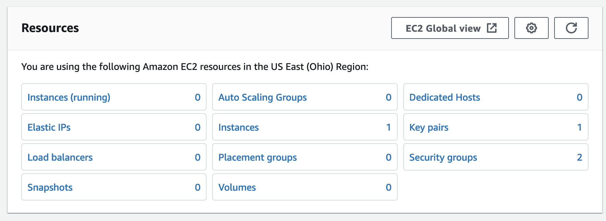
Obtener la IP de tu VPS
Conocer la IP de tu VPS es crucial para poder conectarte a él.
Hacerlo es muy sencillo, identifica la instancia de la que quieres saber los detalles y da click en el hipervínculo azul situado en la columna "Instance ID".
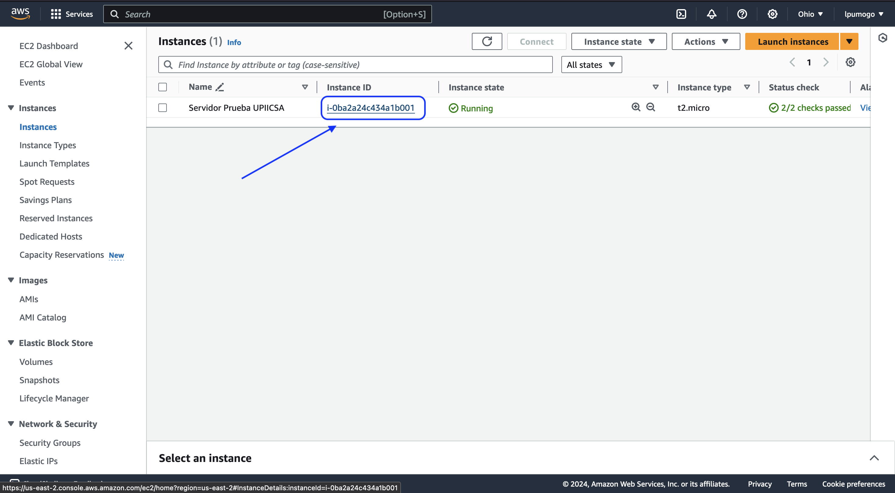
El sitio se actualizará y la información de la IP se verá en el recuadro "Public IPv4 address".
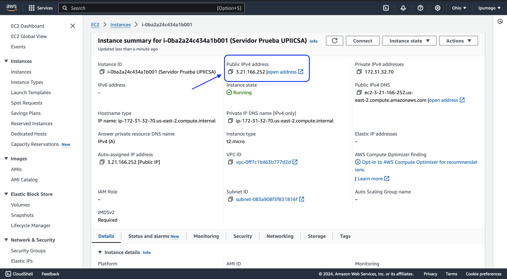
Usuario por defecto para conexiones remotas
Este dato no se configuró en ningún punto, pero la imagen de Ubuntu Server usada en AWS tiene por defecto al usuario ubuntu como el usuario administrador.
Conclusión
Este material te puede servir como una muy básica guía de referencia para implementar servidores VPS en la plataforma AWS, te recomendamos que solo mantengas el servidor activo el tiempo que planes estudiar con él para evitar consumir tus 750 horas, para ello consulta el apartado "Detener o Eliminar instancia EC2" las veces que requieras.
Dirigete al Módulo 2 - Conoce tu servidor para continuar con el taller.
Aún hay más...
Esta no es la única manera de interactuar con AWS, te invitamos a que investigues qué es la CloudShell de AWS.